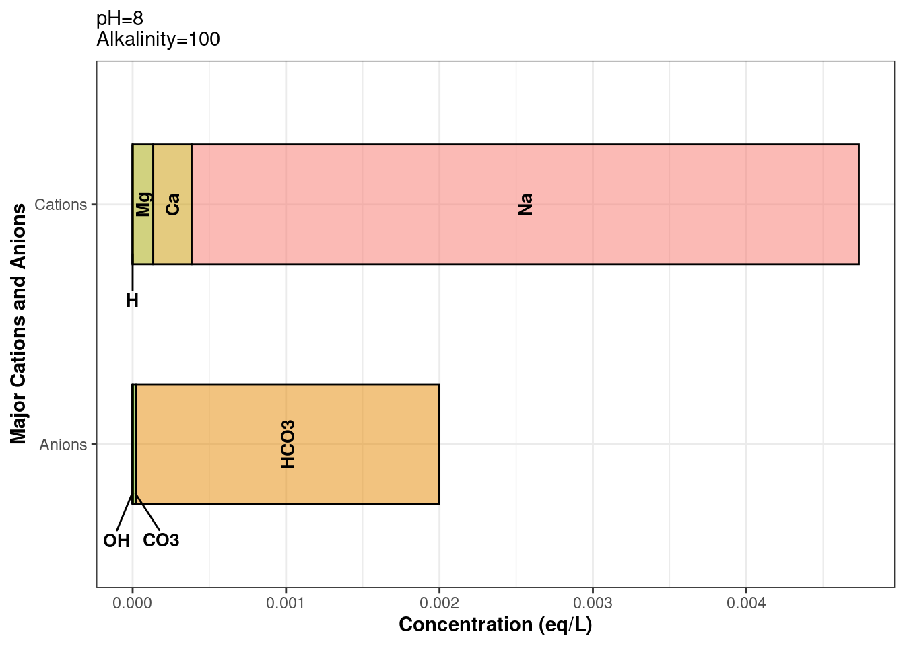
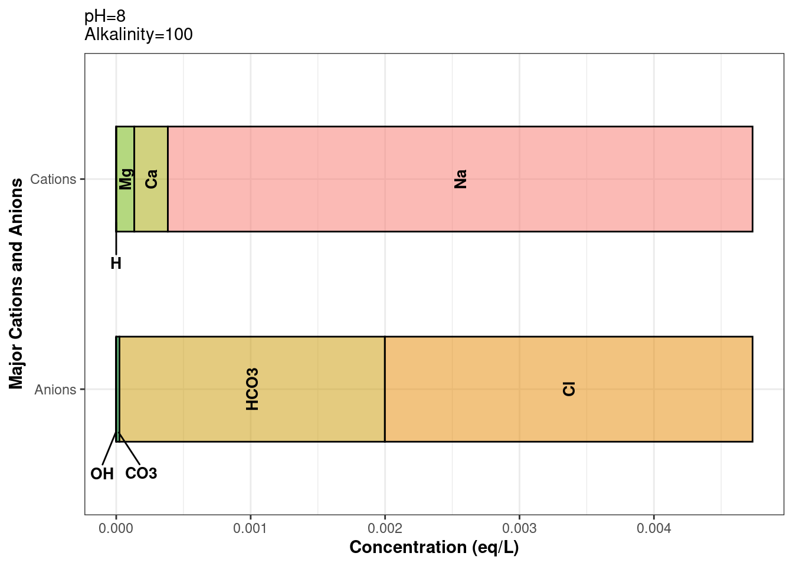
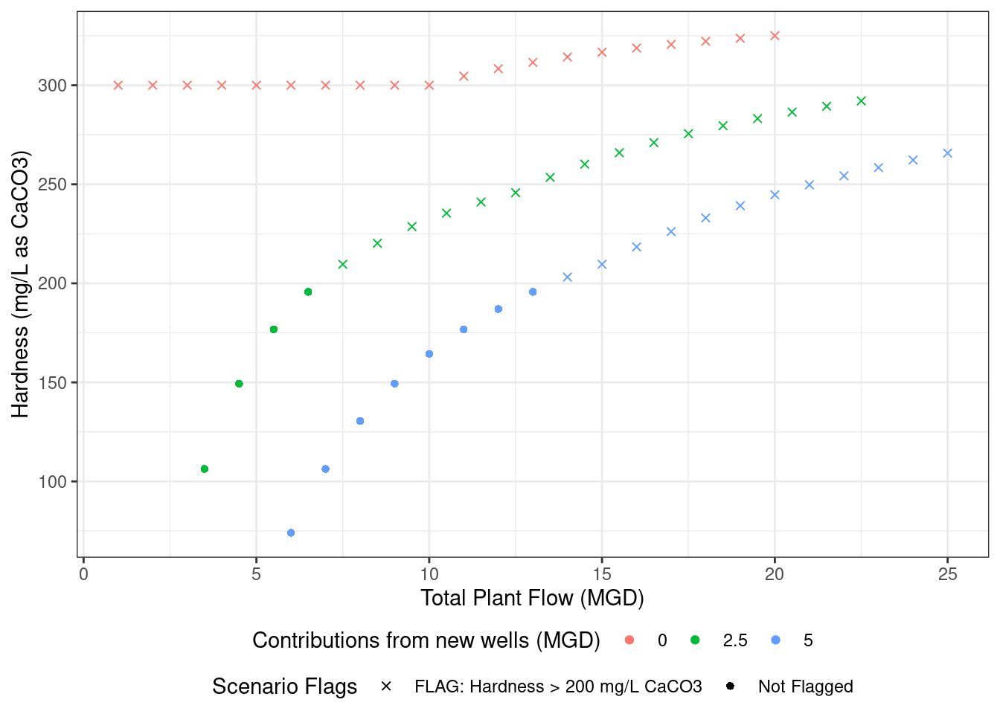

Built-in tidywater features you didn’t know you needed
How to apply tidywater’s helper functions to a data frame
helper_functions
blend_waters
Author
Libby McKenna
Published
November 19, 2024
If you have a ton of water quality parameters already in a data frame format, it might be frustrating to manually type each of them into define_water. That’s where the tidywater helper functions come in handy. In this post, we’ll show you how to pipe a data frame into a tidywater function using a water blending analysis.
This post assumes a basic understanding of define_water and the S4 water class. See vignette("intro", package = "tidywater") for more information.
Blending Analysis Setup
In this analysis, a hypothetical drinking water utility sources their water from a river and a lake, both of which have high hardness. The operators are investigating whether blending up to 5 MGD from two groundwater wells will reduce the total hardness below 200 mg/L as CaCO3.
define_water_once
First, let’s take a look at the available groundwater data from Well A and Well B. Notice the use of define_water_once.
# Example of how to use a tidywater "_once" function to define multiple waters in a single data framedata <-tibble(Well =c("A", "B"),ph =c(8, 9),alk =c(100, 150),temp =c(18, 19),ca =c(5, 10),cond =c(500, 900),tds =c(300, 500),na =c(100, 200),k =c(0, 20),cl =c(0, 30),so4 =c(0, 0)) %>%define_water_once()data
define_water_once is the first helper function we’ll cover. This function does exactly what define_water does, but applies it to a data frame input. This means once your data has the proper column names, define_water_once can add the parameters to each water slot, calculate the carbonate balance (and other relevant calculations), and outputs all parameters in the water class as a data frame. Any function with the _once suffix in tidywater can be used in a piped code block. However, tidywater functions cannot be used directly downstream of these types of functions because the data is no longer in a water class format.
define_water_chain
So what if you want to chain more tidywater functions together? In that case, you can use define_water_chain. This function takes a dataframe input, then outputs all parameters in a water class column. This is true for all tidywater functions with the _chain suffix. _chain functions are handy in a piped code block where you’ll need to use many tidywater functions, such as chemdose_ph, solvedose_alk, etc. Most tidywater functions have a _chain or _once option.
# Read in data from Wells A and Braw_wells_water <-tibble(Well =c("A", "B"),ph =c(8, 9),alk =c(100, 150),temp =c(18, 19),ca =c(5, 10),cond =c(500, 900),tds =c(300, 500),na =c(100, 200),k =c(0, 20),cl =c(0, 30),so4 =c(0, 0)) %>%define_water_chain() %>%balance_ions_chain()raw_wells_water
defined_water Well
1 <S4 class 'water' [package "tidywater"] with 63 slots> A
2 <S4 class 'water' [package "tidywater"] with 63 slots> B
balanced_water
1 <S4 class 'water' [package "tidywater"] with 63 slots>
2 <S4 class 'water' [package "tidywater"] with 63 slots>
It’s always a good idea to verify our code is working properly. To make sure that our data was balanced using balance_ions_chain, we can plot our water class using plot_ions. The below example shows how to index a water class column: dataframe$water_class_column[[row_number]]
# Ion plot before balance_ions_chain was appliedraw_wells_water$defined_water[[1]] %>%plot_ions()

# Plot of balanced ionsraw_wells_water$balanced_water[[1]] %>%plot_ions()

Let’s continue with our blending analysis. We’re going to treat our two wells as a single groundwater source. Blending can be calculated as Well_A_ratio * Well_A concentration + Well_B_ratio * Well_B_concentration. This is fine for most parameters, but for pH and acid/base equilibrium species, blending is a little more complicated. Enter: blend_waters. This function blends waters as you’d expect, and does all the pH blending math for you. In the example below, we’re going to be blending inefficiently. But don’t worry, there will be a better blending example later.
blend_waters
To blend our two wells, we will blend row 1 of balanced_water with row 2 of balanced_water. This “vertical” blending is not efficient and will not be useful for large data frames. water objects cannot be pivoted, hence the row-to-row blending. In later examples, we will actually blend columns, which is more amenable to piped code chunks.
The balanced_water function takes 2 or more waters (must be of the water class), and corresponding ratios for each water.
# Blend "vertically": blends the data in well A's row with that of well B's.# The pluck function from the purrr package is useful for indexing a water class column### First, index the water column using the name or number of the column (ie "balanced_water" or 3 (column number))### Next, index the rowblended_wells_water <-blend_waters(waters =c(pluck(raw_wells_water, "balanced_water", 1),pluck(raw_wells_water, 3, 2) ),ratios =c(.5, .5))# outputs a water class object.blended_wells_water
pH (unitless): 8.73
Temperature (deg C): 18.5
Alkalinity (mg/L CaCO3): 125
Use summary functions or slot names to view other parameters.
We will create a data frame of the blend scenarios we will be modeling, in this case, we are varying flow rates from the different sources.
To finish blending our wells, we will transform the blended_wellswater object into a data frame containing a water column. The river and lake sources don’t require any mixing. We’ll set up their raw data and balance the ions using define_water_chain to make a data frame with a water column. In balance_ions_chain, we are specifying the name of the output columns so we can use the different water sources later. Most of tidywater’s _chain functions have the option to name the output column. Defaults vary depending on the _chain function.
Now that we have our 3 sources defined, balanced, and cleaned up, we can blend them. This next code chunk showcases the power of tidywater. We’ll use blend_waters_chain, the helper function for blend_waters. We already created water class columns above, so we’ll use those column names in the waters argument. The ratios for each water source were calculated in the scenarios data frame. We’ll pass the names of those ratio columns into the ratio argument. The ratios must always add up to 1, otherwise the function will not run.
With all three source waters blended for each tested scenario, we can pull out a parameter of interest. In this case, we’re investigating how much we can dilute the total hardness. This brings us to our final helper function for this vignette: pluck_water. This function uses purrr::pluck to create a new column for one selected parameter from a water class object. You can choose which water column to pluck from using the input_water argument. Next, select the parameter of interest (which must match the water slot’s name). Finally, the output column’s name will default to the name of the plucked parameter, but there is an option to name it yourself using the output_column argument. If you want to view all the parameters as separate columns, it is better to use a _once function instead of _chain (i.e., we could have used blend_water_once above).
plotting_data <- blend_water %>%pluck_water(input_water ="blended_water", "tot_hard") %>%# Flag scenarios for plottingmutate(Flagged =case_when(blended_water_tot_hard >200~"FLAG: Hardness > 200 mg/L CaCO3", TRUE~"Not Flagged"))# Plot the results!ggplot(plotting_data, aes(x = total_flow, y = blended_water_tot_hard, color =as.character(Wells_flow), shape = Flagged)) +geom_point() +scale_shape_manual(values =c(4, 16)) +labs(y ="Hardness (mg/L as CaCO3)", color ="Contributions from new wells (MGD)",shape ="Scenario Flags", x ="Total Plant Flow (MGD)" ) +theme_bw() +theme(legend.position ="bottom",legend.box ="vertical",legend.margin =margin(-5, 0, 0, 0) )

Speed it up
As you use more tidywater helper functions with larger data sets, you’ll notice the code can take a few minutes to run. All helper functions use functions from the furrr package. To reduce processing time, you can activate furrr’s parallel processing power by using plan() at the beginning of your script. plan() depends on what type of operating system you have, more info on that in the Controlling How Futures are Resolved table.
# For most operating systems, especially Windows, use this at the beginning of your script# We recommend revmoving the `workers` argument to use your computer's full power.plan(multisession, workers =2)# rest of script# At the end of the script, here's an option to explicitly close the multisession processingplan(sequential)